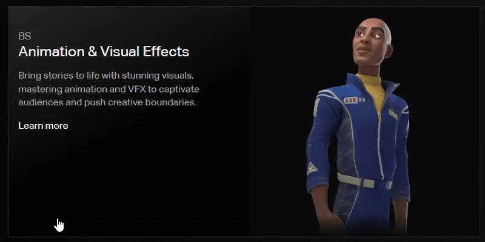

This project explores the end-to-end redesign of microinteractions for the Drexel DIGM degree cards found on the program’s homepage. The original interface contained minimal hover feedback and few interactive affordances that could enhance users’ sense of control and engagement.
Across three development stages of Alpha, Beta, and Final Builds, I designed, documented, and coded progressively more complex microinteractions. Each build was implemented in its own webpage, allowing me to evolve the interaction behaviors.
The final solution introduces a fully interactive card system featuring hover animation, color transitions, menu expansion, a favorite button, sharing animations, and a 3D flip card interaction. These improvements create a richer and more interactive experience ali.
For this Project, I had to examine the degree-cards area on Drexel's DIGM website and iterate a set of microinteractions. The project required designing and coding three levels of the microinteractions, each documented separately and built in standalone webpages. These were Alpha and Alpha Build, Beta and Beta Build, and Final and Final Build. The purpose was to improve the existing interface by enhancing meaningful interactions that reinforce user control, readability, and delight.
September 2025 - December 2025 (4 months)

The existing page worked, but the interactions felt flat and unresponsive. There were no visual cues to guide users or acknowledge their actions, which made the experience feel less engaging. I saw this as an opportunity to add microinteractions, small moments of feedback that help users feel more connected and engaged as they navigate the page.
Improve clarity and responsiveness of the degree cards
Build fully functional prototypes in HTML/CSS/JS
Document triggers, rules, feedback, and loops/modes for each build stage
Add opportunities for user control (favorites, sharing, etc.)
Create microinteractions that enhance the UX without overwhelming users
Solo designer + developer
I handled:
Research
Microinteraction documentation and Visual Design
HTML, CSS, JavaScript implementation for all three build stages
To understand where microinteractions could make the biggest impact, I reviewed the existing page and observed how users would interacted with its main features. I paid attention to moments where there might be hesitations or repeated actions. These small points of friction highlighted where feedback was missing.
I also looked at common patterns from similar interfaces to see how they used motion, hover states, and visual cues to guide users. This helped me identify opportunities to create a more responsive experience. Overall, the research confirmed that adding purposeful microinteractions would help the page feel smoother and more engaging.
HTML based webpage: Alpha
The goal was to introduce one simple microinteraction based only on Hover state. I also added the descriptions including the trigger, rules, feedback, loop, and mode. Below is the hover mirointeraction that the existing page have.
HTML based webpage: Alpha Build
This is where i built and coded the Hover microinteraction that was described in Alpha usng HTML and CSS.
Key interactions:
Hover makes image go from grayscale → color
Image zooms slightly
Card background becomes gradient
Hover off reverses all animations
HTML based webpage: beta
In the Beta stage, I took what worked from the Alpha version and added 2 more microinteractions.
The interactions i added was a "+" or "more" button which triggers with a click and a "Favorite" button with triggers with a click.
I tested different timings, easing styles, and feedback patterns to see which options supported the user experience best.
Below is a prototype of the beta idea I designed on Figma

HTML based webpage: Beta Build
In the Beta Build, I coded a different HTML based webpage and added JavaScript since i had some microinteractions that triggers by clicking.
"+" button click
icon rotates 135 degree to make an "x" icon
menu bar slides open to the right
second click reverses all animation.
"Favorite" button click
button gets filled in black
second click undoes the fill in
HTML based webpage: Final
In the final stage, I designed 3 complex microinteraction designs to the 3 that already existed in Alpha and Beta.
These were; one hover trigger and two click-triggered actions. Each interaction was carefully
prototyped in Figma to test timing, motion, and usability before being finalized and coded.
Below is a prototype of the final ideas I designed on Figma

HTML based webpage: Final Build
All 6 microinteractions were coded on a separate HTML based webpage with all 6 microinteractions functional.
Hover (degree card) — grayscale → color, subtle zoom (1.04), background gradient, pointer cursor.
"+" Menu (click) — plus icon rotates 135° into an X; a menu panel slides open from the right.
Favorite button (click) — icon toggles fill state (instant visual change; spec includes DB persistence).
Share button (click) — brief “fly out” send motion for the icon to convey action.
Flip (Hover) — Hover fills flip icon left to right
Flip (click) — card flips horizontally to show the back; click executes flip animation.
Through iterative builds and prototyping, the final solution delivered an interactive and a more confident user experience. The microinteractions worked together to create a page that communicates clearly, responds naturally, and feels more enjoyable to navigate.
Triggers
Degree Card Hover On and Off
“+” button Click
“Share” button Click
“Favorite” button Click
Flip button On and Off
Flip button Click
Loops and Mode
No repeating auto-loops.
Rules
Degree Card Hover On:
image toggles from grayscale to color; image scale increases to 1.04; background becomes gradient; cursor → pointer; transitions 0.5s ease in and out.
Degree Card Hover Off:
image reverts to grayscale and scale 1.0; background changes to solid black; transitions 0.5s ease in and out.
“+” cutton Click to Open:
"+" icon rotates 135° to form “x”; menu slides open to the right; transitions 0.5s ease in and out.
“x” button Click to Close:
"x" icon rotates back to "+"; menu slides closed; transitions 0.5s ease in and out.
"Favorite" button Click:
button gets filled in black; Second click unfill it; state of button gets updated in the database until clicked again; transitions 0.5s ease in and out.
Share button Click:
Send-like motion occur and the button appears to be flying out; transitional time is 0.5s ease in and out.
Flip button Hover On:
button gets filled in yellow from left to right; transitional time is 0.5s ease in and out.
Flip button Hover Off:
button gets unfilled from right to left; transitional time is 0.5s ease in and out.
Flip button Click:
Flips the degree card horizontally to show other side; transitional time is 0.5s ease in and out.
Feedback
This is anything the user sees, feels, or hear once the microinteraction is triggered.
Degree Card Hover On:
image toggles from grayscale to color; image scale increases to 1.04; background becomes gradient; cursor → pointer; transitions 0.5s ease in and out.
Degree Card Hover Off:
image reverts to grayscale and scale 1.0; background changes to solid black; transitions 0.5s ease in and out.
“+” cutton Click to Open:
"+" icon rotates 135° to form “x”; menu slides open to the right; transitions 0.5s ease in and out.
“x” button Click to Close:
"x" icon rotates back to "+"; menu slides closed; transitions 0.5s ease in and out.
"Favorite" button Click:
button gets filled in black; Second click unfill it; transitions 0.5s ease in and out.
Share button Click:
Send-like motion occur and the button appears to be flying out; transitional time is 0.5s ease in and out.
Flip button Hover On:
button gets filled in yellow from left to right; transitional time is 0.5s ease in and out.
Flip button Hover Off:
button gets unfilled from right to left; transitional time is 0.5s ease in and out.
Flip button Click:
Flips the degree card horizontally to show other side; transitional time is 0.5s ease in and out.
You can see the final Build here
The final outcome was a more engaging page that responded naturally to user actions. The added microinteractions helped guide users, reduce hesitation, and make the interface feel more alive. The different stages of design in both Figma and coded prototypes showed clear improvements in clarity and overall interactivity. The project demonstrated how small, thoughtful details can significantly improve the experience without changing the core layout or structure.
How progressive iteration strengthens design quality
How microinteractions reinforce meaning and usability
The importance of documenting every interaction clearly
If I were to approach this project again, I would spend time gathering user feedback between each build, rather than relying mainly on my own observations. I would also explore more variations during the stages to broaden the range of possibilities before narrowing down. These changes would help create an even stronger and more user-informed final experience.
Overall, the project reinforced how microinteractions, when designed with purpose, can elevate an interface in a meaningful and memorable way.